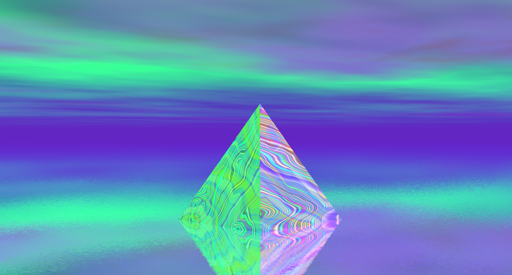
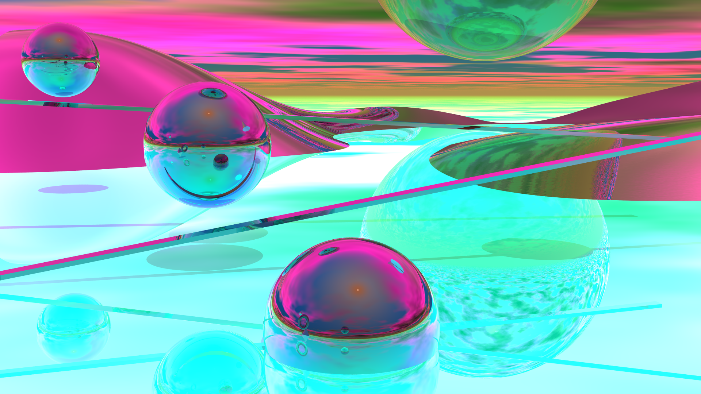
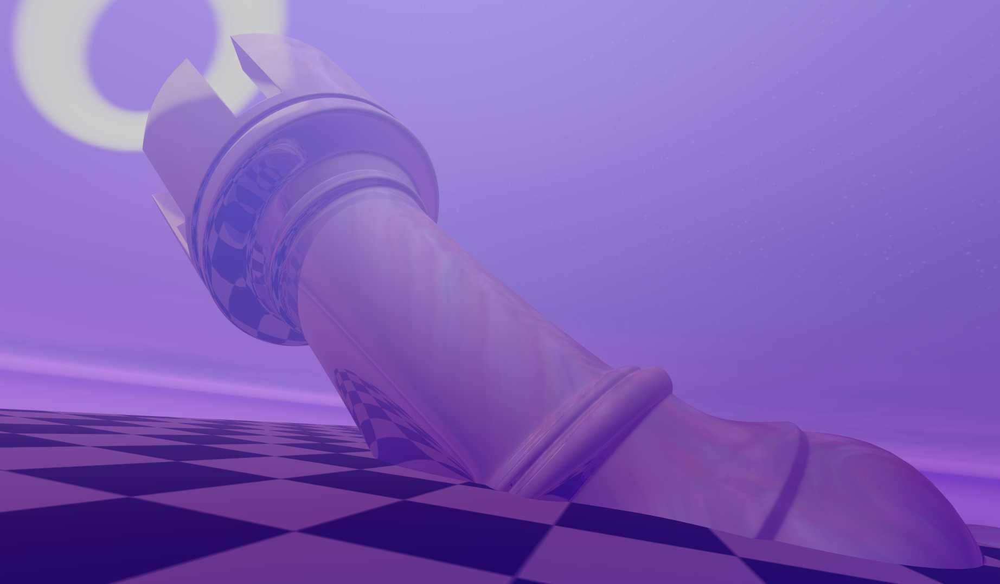

<- Go Back
I really like retro digital art, and here you can find my attempts at emulating some of those styles. Title - Style - Software - Year Blurred Horizon - Retro CGI - Bryce 7 - 2020
peepoe - ANSI Art - Moebius - 2020
Acidic Reflections - Retro CGI - Bryce 7 - 2020
Rook to Void - Retro CGI - Bryce 7 - 2020